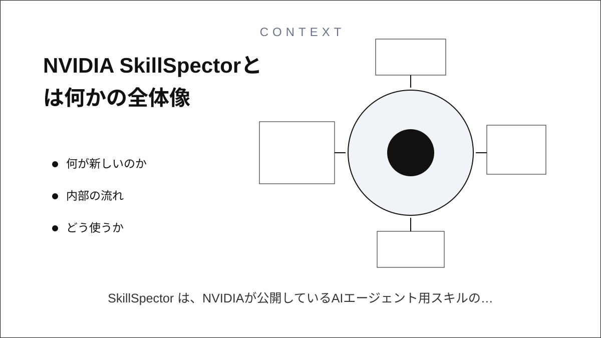
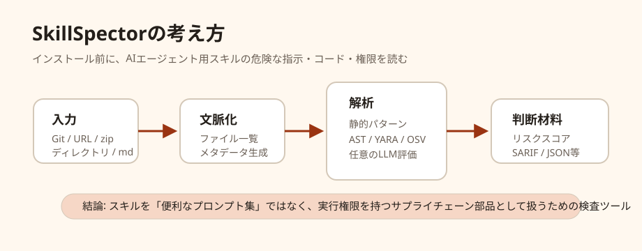
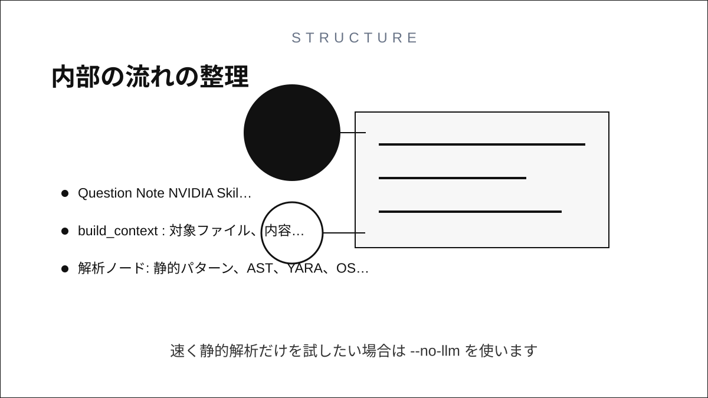
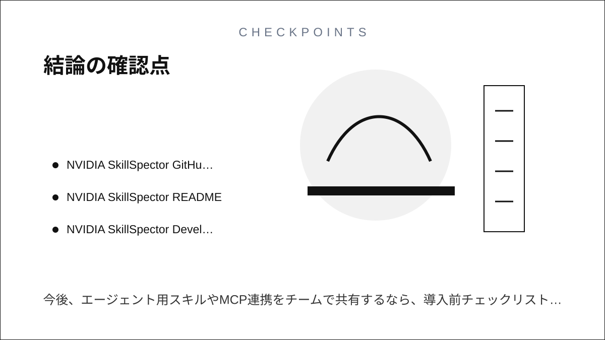

Question Note
NVIDIA SkillSpectorとは何か


SkillSpectorは、NVIDIAが公開しているAIエージェント用スキルのセキュリティ検査ツールです。 Claude Code、Codex CLI、Gemini CLIのようなエージェント環境では、スキルがファイル操作、コマンド実行、 外部通信などに関わることがあります。便利な一方で、悪意ある指示や危険なコードが混ざると、 秘密情報の漏えい、権限の乱用、サプライチェーン攻撃につながります。

このツールの狙いは「そのスキルを入れてよいか」を判断する材料を作ることです。Gitリポジトリ、URL、
zip、ローカルディレクトリ、単一のSKILL.mdなどを入力にして、危険パターンを検出し、
0から100のリスクスコア、重要度、推奨判断、SARIF/JSON/Markdownなどのレポートを出します。
何が新しいのか
従来のコードスキャナーは、主に一般的なアプリケーションコードの脆弱性を見るものでした。 SkillSpectorは、AIエージェントの「スキル」という新しい配布単位に寄せています。 スキルにはコードだけでなく、モデルに読ませる指示文、トリガー、外部ツールの使い方、MCP連携などが含まれます。 そのため、普通の依存関係チェックだけでは見落としやすい攻撃面を検査対象にしています。
| 観点 | SkillSpectorが見るもの | 読者が気にする理由 |
|---|---|---|
| プロンプト注入 | 安全制約を無視させる指示、隠し命令、外部送信の指示 | スキルの説明が無害でも、本文に別の行動指示が埋め込まれる可能性がある。 |
| データ漏えい | 環境変数、秘密鍵、会話文脈、ファイル一覧を外部へ送る処理 | エージェントは開発環境の秘密情報に近い場所で動くことが多い。 |
| 危険なコード | exec、eval、subprocess、os.systemなど |
便利な自動化スクリプトと任意コード実行の境目が曖昧になりやすい。 |
| サプライチェーン | 未固定依存、外部スクリプト実行、既知脆弱性、タイポスクワッティング | スキル本体が短くても、依存先からリスクが入る。 |
| MCPとツール権限 | 過剰権限、ツールポイズニング、最小権限違反 | エージェントのツール接続は、攻撃時の実行経路になり得る。 |
内部の流れ
開発ドキュメントによると、SkillSpectorはLangGraphベースのワークフローです。 入力をローカルの検査対象に解決し、ファイル一覧やメタデータを作り、複数の解析ノードを並列に走らせます。 その後、任意のLLM評価で検出結果を絞り込み、最後にSARIF 2.1.0、リスクスコア、表示用レポートを生成します。
resolve_input: Git URL、zip、単一ファイル、ディレクトリなどを検査可能なローカルパスに解決する。build_context: 対象ファイル、内容、メタデータ、実行可能スクリプトの有無を整理する。- 解析ノード: 静的パターン、AST、YARA、OSV.dev照会、MCP関連、セマンティック検査などを実行する。
meta_analyzer: LLMを使う設定なら、検出結果を意味的に確認・補強する。report: リスクスコア、推奨判断、SARIF/JSON/Markdown/端末表示を作る。
どう使うか
Python 3.12以上の環境でインストールし、skillspector scanに検査対象を渡すのが基本です。
LLM評価を使う場合は、OpenAI互換エンドポイント、Anthropic、NVIDIAの推論サービスなどを環境変数で指定できます。
速く静的解析だけを試したい場合は--no-llmを使います。
git clone https://github.com/NVIDIA/skillspector.git
cd skillspector
uv venv .venv && source .venv/bin/activate
make install
skillspector scan ./my-skill/
skillspector scan https://github.com/user/my-skill --format markdown --output report.md
skillspector scan ./SKILL.md --no-llm実用上の位置づけ
SkillSpectorは「安全を保証するツール」ではなく、インストール前レビューの初期フィルターとして見るのが現実的です。 機械的に検出できる危険な構文や依存関係を拾い、LLMで意味的な怪しさを補助し、レビュー担当者が確認すべき場所を絞ります。 CIに組み込むならSARIF出力が使いやすく、個人利用ならMarkdownや端末出力で十分です。
特に有効なのは、外部から拾ってきたスキル、社内に配る共通スキル、MCPサーバーやCLI実行を伴うスキルです。 反対に、検査結果だけで自動的に安全判定して本番導入する運用は危険です。スキルの目的、必要権限、依存先、 実行環境でアクセスできる秘密情報を、人間が最後に確認する必要があります。
結論
SkillSpectorは、AIエージェント時代の「スキル版SCA/SAST」に近い道具です。 スキルを単なるプロンプト部品ではなく、実行権限を持つソフトウェア部品として扱うための検査レイヤーを提供します。 今後、エージェント用スキルやMCP連携をチームで共有するなら、導入前チェックリストの中心に置く価値があります。
